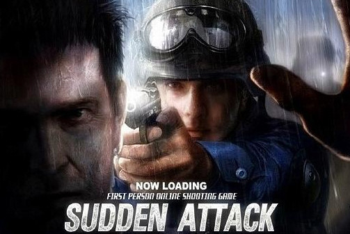

Sudden Attack
About Sudden Attack
《 서든어택 》(Sudden Attack)은 넥슨지티(전 게임하이)가 개발한 온라인 1인칭 슈팅 게임이다.
게임플레이 레드, 블루 이렇게 2개의 팀으로 게임이 진행된다. 레드팀은 Tanzirilo Independence Force이고, 블루팀은 United Great Force이다.
About Sudden Attack
《 서든어택 》(Sudden Attack)은 넥슨지티(전 게임하이)가 개발한 온라인 1인칭 슈팅 게임이다.
게임플레이 레드, 블루 이렇게 2개의 팀으로 게임이 진행된다. 레드팀은 Tanzirilo Independence Force이고, 블루팀은 United Great Force이다.